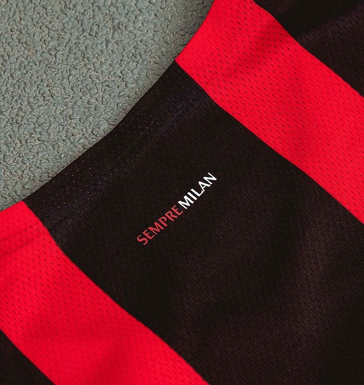
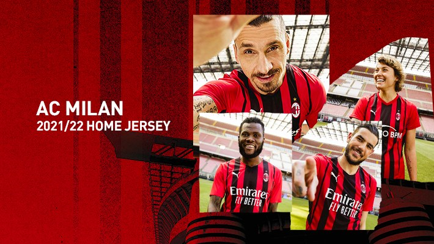

Home


HOVER ↻主场球衣 Home
"Move Like Milan" · 经典红黑的不对称重塑
设计语言：采用 Puma 现代版 Rossoneri 经典造型——红色底色上以不同宽度的黑色竖纹取代等宽传统条纹，中央一条主黑纹向两侧渐窄。白色 Polo 立领与袖口细节点缀，整体外观延续 1899 年俱乐部创立以来的视觉身份。
细节：胸前 Puma 美洲狮徽标与 Emirates "Fly Better" 主赞助；后颈内印 "SEMPRE MILAN"（永远米兰）；2021/22 赛季红黑军团在意甲完成 11 年回归意甲冠军的关键征途，这件球衣见证伊布、吉鲁、莱奥、托纳利的荣耀时刻。